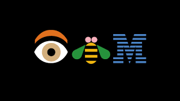

Experience
Consultant, Microsoft India
June 2021 – Present
- Designed analytical solutions for clients across various industries.
- Lead the vendor teams overlooking end-to-end project completions.
- Utilized DevOps APIs to automate project management reports in Power BI for multiple projects.
- Built Power BI reports for Sales consolidation for gaming sector clients utilizing data from blob storage.
- Built AI Solutions for Pharma and Financial Solution Customers.
- Built Data model and Paginated reports for Government sector customer.
- Developed Power BI reports on Synapse SQL pools for education clients.
- Built ADF pipelines for data flow and migrated Tableau reports to Power BI.
- Automated Migration of Power BI tenant to tenant Migrations for a customer utilizing API’s and PowerShell scripts.
- Collaborated with stakeholders to design migration roadmaps.
- Received Industry Solution Award for project excellence.
- Provided effort estimations for migration components.
- Designed T-SQL stored procedures and SSIS ETL solutions.
- Troubleshot performance issues using DMVs and query plans.
Application System Engineer, Wells Fargo
September 2016 – June 2021
- Managed a team of six in overseeing application support and development initiatives.
- Delivered SSIS/SSRS/Power BI solutions; Migrated legacy workloads and standardized models and measures for consistency and reuse.
- Drove incident response and root-cause analysis for data quality and performance issues, implemented preventive controls and monitoring.
- Configured database mirroring, log shipping, and replication.
- Enhanced database functionality through T-SQL and SSIS.
- Earned Champion Award for Q3 2018-19 for migration expertise.
- Migrated SQL Server 2000/2005 to 2012/2014/2016.
- Debugged SSRS reports and managed user permissions.
- Resolved high-severity issues with minimal guidance.

Application Developer, IBM India Pvt Ltd
May 2014 – September 2016
- Developed T-SQL scripts, stored procedures, and triggers.
- Performed side-by-side SQL Server migrations.
- Monitored database servers for vulnerabilities.
- Ensured compliance with Sarbanes-Oxley standards.
- Managed SQL Server jobs and logs.
- Conducted UAT testing for database enhancements.
- Designed maintenance plans for backups and restores.